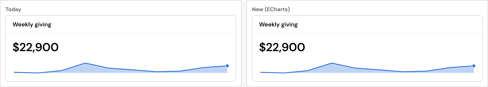
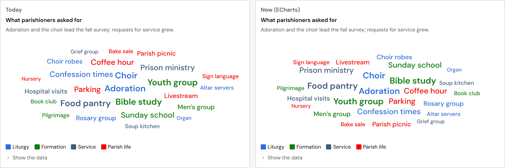
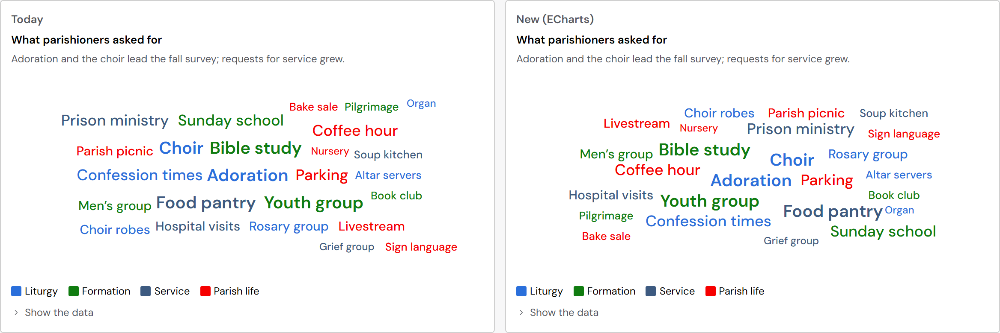
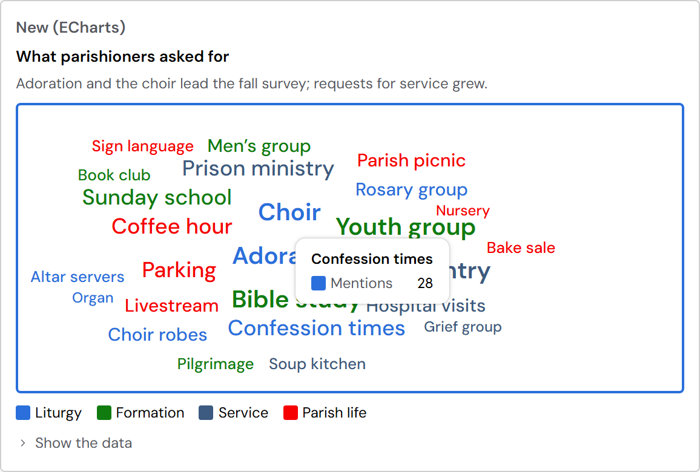

Sparkline and WordCloud on ECharts, and retiring Diagram
Your decision of 2026-10-26, shown before anything ships. Today's version is on the left of each picture, the new one on the right, with made-up St. John the Beloved numbers and survey answers. Open the live preview.
In short: both look like today's. Two findings need your word. Sparklines on ECharts are about 20 times slower to draw: 200 take 1.5 seconds instead of 0.07. And the St. John test site uses Diagram for its ministries chart, while Plenix has no Tree chart to send it to yet.
Sparkline

Speed. Each sparkline is now its own small ECharts chart. Measured in the test browser, 200 sparklines (a long table with a trend column):
| How it is drawn | Time to draw 200 | Extra memory |
|---|---|---|
| Today (Plenix's own drawing) | 0.07 s | none |
| A · ECharts, a live chart each (built) | 1.5 s | about 12 MB |
| B · ECharts, drawn as a picture each (measured, not built) | 0.2 s | small |
- A is what the pictures show. A table that draws only its visible rows (about 30) takes about 0.2 s.
- B still uses ECharts, but it turns each sparkline into a finished picture and keeps no live chart behind it. Sparklines don't move or respond to the pointer anyway.
- Either way, a page whose only charts are sparklines (a dashboard of metric cards) now loads the chart engine (183 KB compressed, once).
WordCloud



- The word cloud is ECharts' word-cloud extension (echarts-wordcloud 2.1.0). It comes from the original ECharts team, though its own page calls it third-party. It is in its own small file (7 KB compressed), loaded only on pages with a word cloud.
- It was written for ECharts 5 and last updated in 2022. Two things needed fixing in Plenix for ECharts 6: the words didn't appear until the chart was asked to repaint, and bold words could touch. Both are fixed.
Retiring Diagram
Nothing is removed yet: it goes with the build, once you've answered decision 3. What goes:
- The component: platform/charts/Diagram.jsx and diagram.css, its export (index.js, exports/w09A), its 26 tokens (diagram.tokens.json), its text contracts, its native mapping, and its system-check entries.
- The design spec: the Diagram page, record, lab and docs (parts/w09A), replaced by a note on the Charts overview page: "Diagram was retired on 2026-10-26: for a hierarchy use the Tree chart, for flows between steps the Sankey diagram, for connections the network graph. Process flowcharts are no longer in the library."
- The changelog, under Removed (breaking): "Diagram, its tokens (--plx-comp-diagram-*) and its classes (plx-diagram__*). Use TreeChart, SankeyDiagram or NetworkGraph; process flowcharts are no longer in the library (#353)."
- No suite app uses Diagram. The St. John test site does, on its Ministries page: a boxes-and-arrows chart of how the ministries report to the clergy. That page has to move before the release that removes Diagram.
- There is no Tree chart in Plenix today (Treemap is a different chart: nested rectangles). ECharts has one, its tree series: about 10 KB more in the engine. It draws exactly that reporting chart (clergy, then their ministries) and fits the order you set.
For you to decide
- Sparkline: A or B? A: a live ECharts chart each (built, 1.5 s for 200). B: ECharts draws each one as a picture (0.2 s for 200; I'd build it and show you). Recommended: B, since sparklines often come by the hundred in tables.
- Does WordCloud pass, with the dimming in place of the underline?
- The Tree chart: add a TreeChart on ECharts' tree series and move the test site's ministries chart to it, then remove Diagram. Recommended: yes. The other way is to point that page to the network graph's hierarchical layout.
- The rule from the first four charts applies here too: ECharts writes the sizes and fonts of its own drawing, from the tokens.